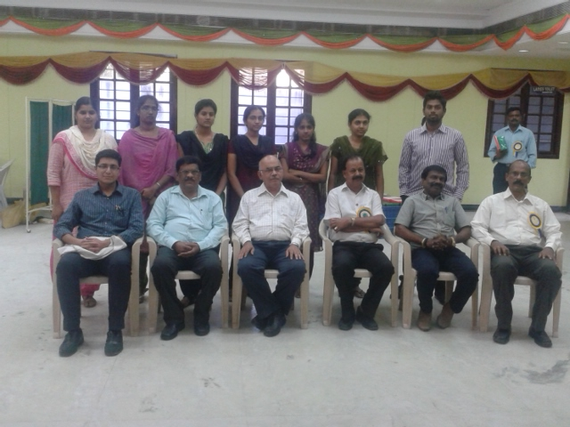

|
|  |
Dr P D Madan Kumar, a preventive and community dentist, graduated from the Ragas Dental College and Hospital, Chennai. He pursued his postgraduate degree from the prestigeous Manipal University and has also completed his Post graudate certificate program in health and family welfare management from NIHFW, New Delhi. Presently he is working as a faculty member at Ragas Dental College and is practicing at Dentacraft dental clinic, Mandaveli, Chennai.
|
Public outreach program has always been his passion and interest and this has made him conduct numerous camps and outreach activities for the poor and needy. To mention a few were the massive world health day rally conducted at Marina Beach during April 2007 which recieved wide coverage and appreciation. In fact he is listed in the WHO's official website for his work during the No Tobacco day this year.
Having attended numerous conferences and having a number of scientific publications to his credit, his interest in outreach programs has made him be a part of organizations like Lions Club of Golden Fort, Who we help etc. Being the receipient of the prestigeous Dr Ambedkar Award for service to poor and needy by Institute of Macro-Biology, New Delhi, he is also the Programme corodinator of the NSS unit of Ragas Dental College.
Son of Mr Diwakar and Mrs Jamuna, Dr P D Madan Kumar's wife Dr Poorni is also a practicing dentist and endodontist, assisiting him in all his activites.
|